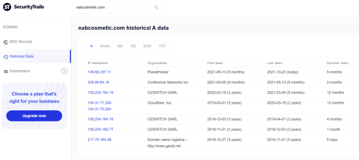
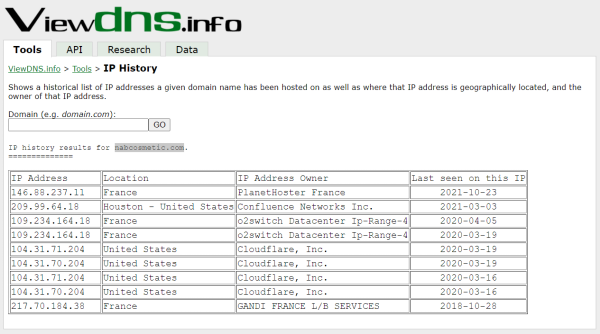

DNS history
• SecurityTrails:
https://securitytrails.com/list/keyword Login → Search
domain → Historical Data
•
ViewDns.info:
https://viewdns.info/iphistory/ Tools:ATTENTION: give some errors,
not updated
wget https://raw.githubusercontent.com/vincentcox/bypass-firewalls-by-DNS-history/master/bypass-firewalls-by-DNS-history.sh
chmod +x bypass-firewalls-by-DNS-history.sh
apt install jq
bash bypass-firewalls-by-DNS-history.sh -d example.com